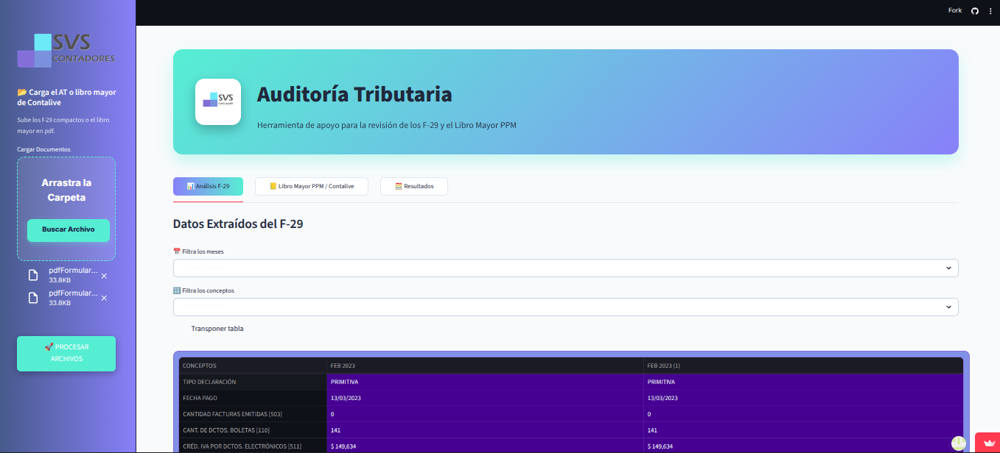
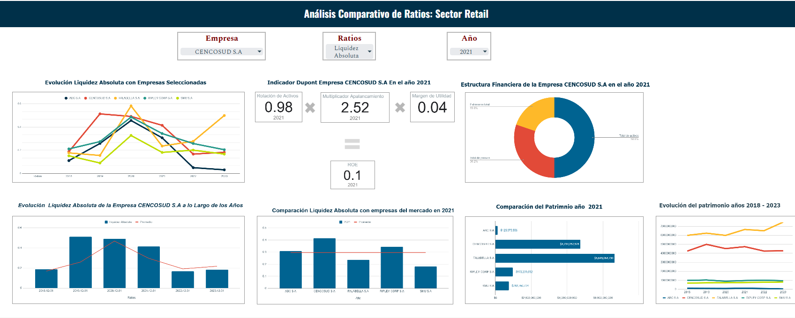

Web App & Apps Script
Sistema de Conciliación a Medida
Aplicación de conciliación que agrupa y procesa pagos, cobros y bancos en un modelo unificado con cálculo en tiempo real.
Ver ProyectoAutomatización, Visualización & Estadística
Empleo Python para automatizar flujos de análisis de datos y enriquecer mis informes con visualizaciones estadísticas avanzadas. Utilizo bibliotecas clave como pandas para la manipulación masiva de datos y matplotlib/seaborn para crear gráficos personalizados que comunican hallazgos complejos de manera clara y efectiva.
Dominio para la carga, limpieza, transformación y combinación (merge) de conjuntos de datos de cualquier fuente y tamaño, automatizando procesos repetitivos de ETL.
Creación de visualizaciones estáticas personalizadas (histogramas, gráficos de dispersión, boxplots) para exploración de datos y storytelling analítico profesional.
Actualmente en proceso de aprendizaje y aplicación de fundamentos para modelos supervisados (regresión, clasificación) y no supervisados, expandiendo mi alcance analítico.
Selección de casos de éxito utilizando esta tecnología.
Aplicación de conciliación que agrupa y procesa pagos, cobros y bancos en un modelo unificado con cálculo en tiempo real.
Ver Proyecto
Procesamiento automatizado de formularios 29, estructuración de datos y cálculo de PPM y reajuste de remanente.
Ver Proyecto
Transforma datos no estructurados en insights financieros.
Ver Proyecto